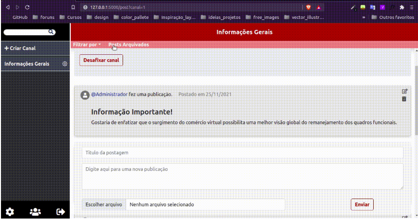
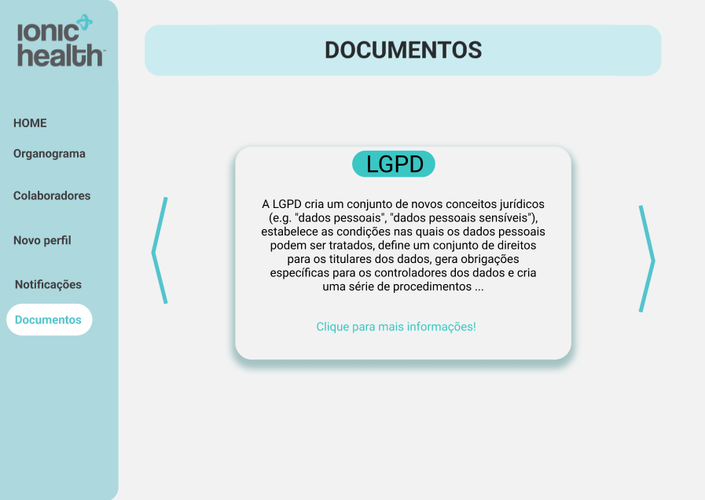
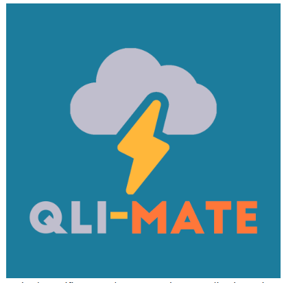
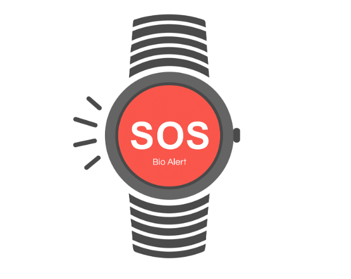
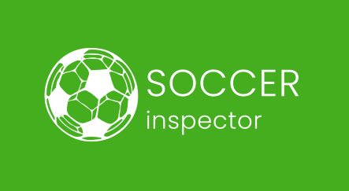
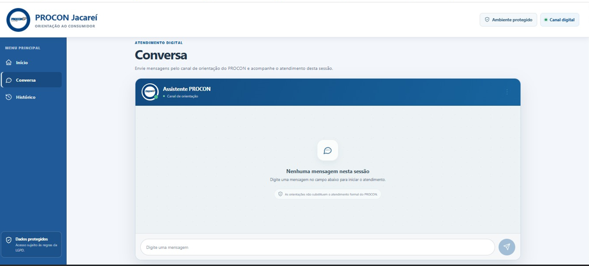

Vó Maria Félix
Site institucional para a ONG Centro de Convivência Infantil Vó Maria Félix.
O projeto fortalece a presença digital da instituição e torna suas informações mais acessíveis ao público.

PORTFÓLIO
Uma seleção de projetos acadêmicos desenvolvidos em equipe, reunindo tecnologia, dados e experiências digitais para problemas reais.
JORNADA ACADÊMICA
07 projetos selecionados
Site institucional para a ONG Centro de Convivência Infantil Vó Maria Félix.
O projeto fortalece a presença digital da instituição e torna suas informações mais acessíveis ao público.

Aplicação web para comunicação seletiva entre a administração, docentes e discentes.
A solução organiza avisos gerais e específicos por curso, reduzindo a perda de informações relevantes em meio ao alto volume de e-mails intensificado durante a pandemia.

Plataforma para gestão de talentos, documentos e processos internos com proteção de dados.
Centraliza o cadastro de colaboradores CLT e PJ, admissão com autocadastro, aprovação de informações, organograma, usuários e trilhas de aprendizagem, respeitando a LGPD.

Plataforma de monitoramento climático e prevenção de riscos no Lago de Furnas.
Integra dados de estações meteorológicas para apresentar informações confiáveis e alertas de segurança em tempo real.

Sistema de detecção de quedas para ampliar a segurança de idosos que permanecem sozinhos em casa.
Por meio de sensores inteligentes em uma pulseira, a solução identifica quedas automaticamente e aciona alertas para agilizar o socorro em situações de emergência.

Plataforma inteligente para análise de desempenho de atletas de futebol.
Importa o histórico de partidas, acompanha indicadores físicos em dashboards, identifica perfis semelhantes com IA e sinaliza quedas de desempenho para apoiar comissões técnicas.

Assistente inteligente no WhatsApp para orientação inicial ao consumidor.
O chatbot esclarece dúvidas, conduz fluxos conforme as diretrizes do PROCON e, quando necessário, encaminha para atendimento presencial com agendamento e lista de documentos.